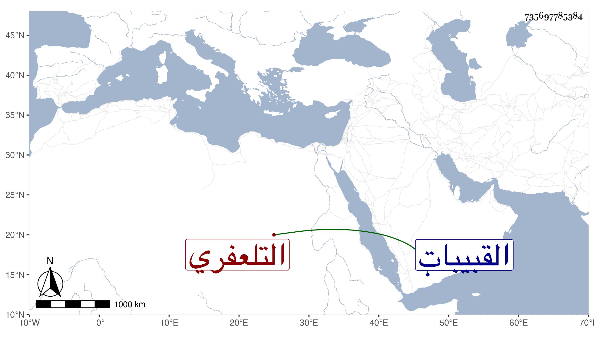

0902Sakhawi.DawLamic.ITO20230111-ara1.EIS1600.735697785384
Biography ID: 735697785384
147
أبو بكر بن علي بن عمر بن عبد الحق التلعفري شيخ معمر ذكر أن والده أخبره أن أمه كانت حاملا به في فتنة بيبغاروس وهي بعيد الخمسين وسبعمائة وكذا ذكر أن من مشايخه والده والحافظ ابن رجب وكان ينزل القبيبات . مات .
